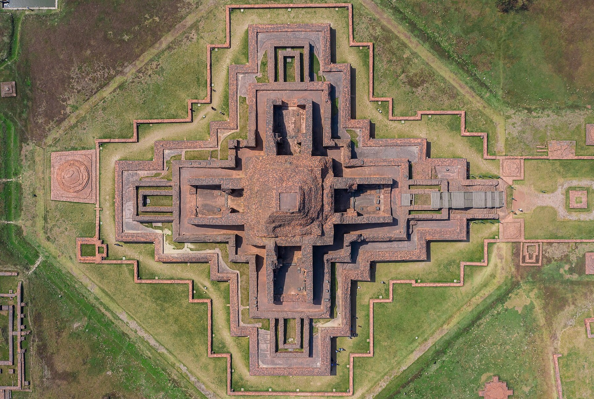

Transcript
Transcript পড়ে narration মিলিয়ে নিন; তথ্যের মূল উৎস profile-এর bibliography.
RESEARCH & TRAVEL ATLAS · উৎস → প্রমাণ → ভ্রমণ
প্রধান প্রত্নস্থলের গভীর বাংলা–English profile, archival survey, 360° tour, জেলা-hub দূরত্ব, research update আর পরিবারের evidence passport—একটি সংযুক্ত Atlas-এ।

পরিধি স্পষ্ট: ১২টি major-site profile দিয়ে শুরু—সব ৩২১৮ রেকর্ডের সমান documentation দাবি নয়। GPS হলো প্রকাশিত site/component coordinate, surveyed entrance নয়। অজানা ভাড়া, সময় বা সড়কের অবস্থা “যাত্রার আগে যাচাই প্রয়োজন”।
MAJOR-SITE DOSSIERS · 01
প্রতিষ্ঠার শতক, বংশ, ধরন, খনন, অবস্থা, কর্তৃপক্ষ, UNESCO, আইন, নিদর্শন, জাদুঘর, উৎস ও visitor metadata—একটি করে dossier.
Profile লোড হচ্ছে…
LOOK CLOSER · RIGHTS-AWARE MEDIA
প্রকৃত provider-hosted sphere ছাড়া flat photo-কে 360° বলা নয়। প্রতিটি local image-এর creator ও licence; protected content-এর ক্ষেত্রে link বা অনুমোদিত embed.
TRAVEL WITH EVIDENCE · 02
দূরত্ব straight-line planning aid; road distance, fare, schedule ও road condition নয়। প্রতিটি লাল verification label পড়ে যান।
কোনো unverified fare, schedule বা road condition লেখা হয়নি।
DISCOVERY & METADATA LOG
গবেষকের field report, সরকারি heritage metadata ও সংবাদ—ধরন আলাদা করে। ‘চলমান বিশ্লেষণ’-কে চূড়ান্ত আবিষ্কার বলা নয়।
COMMUNITY FIELD DESK
এই static portal কোনো তথ্য server-এ পাঠায় না। Draft শুধু আপনার browser-এ থাকে; JSON export করে নিজে DoA/স্থানীয় কর্তৃপক্ষে পাঠাতে হবে।
চলমান লুট, ভাঙচুর বা বিপদে form-এ অপেক্ষা নয়—DoA/স্থানীয় কর্তৃপক্ষ বা ৯৯৯। ঝুঁকিপূর্ণ এলাকায় ঢুকবেন না।
Department of Archaeology ↗FAMILY EVIDENCE PASSPORT
নাম ও stamp শুধু এই browser-এ। Stamp শারীরিক ভ্রমণের প্রমাণ নয়।
LISTEN · MAKE · LEARN TOGETHER
বাংলা ও English transcript-সহ browser speech; prerecorded human voice বলে দাবি নয়। পুরোনো children tools আবার তৈরি নয়—সরাসরি ব্যবহার করুন।
ডিভাইসে Bangla/English voice থাকলে browser-generated narration বাজবে; transcript সবসময় পড়া যায়।
Transcript পড়ে narration মিলিয়ে নিন; তথ্যের মূল উৎস profile-এর bibliography.
৬ পাতা · ভূমিকা, নিরাপত্তা, observation, sketch, damage draft ও ১২ stamp page · বাংলা/English.
PDF ডাউনলোড · ৬ পাতা৩ পাতা · ৬ panel · original bilingual archaeology/Pala-era comic; imagined scene স্পষ্টভাবে চিহ্নিত।
Comic PDF ডাউনলোডআরও টুল · নতুন আপডেট
প্রতিটি Atlas স্থানের Street View, ড্রোন-দৃশ্য, 3D Earth, KML ও স্যাটেলাইট ইতিহাস।
🧭ঘাঁটি-ভিত্তিক ইটিনারারি, কাছের সেবা ও খরচের হিসাব — সার্কিটের পরে যাত্রার প্রস্তুতি।
📜লিপি, সিলমোহর, মুদ্রা, প্রতিমা ও পরিব্রাজকদের গভীর পটভূমি।
🏅পাসপোর্টের ১২ স্ট্যাম্প শেষে যাচাই-কোডসহ সার্টিফিকেট নিন।
SITE-LINKED ACADEMIC BIBLIOGRAPHY
Publisher, তারিখ, source type ও rights/use note-সহ ৩৫টি উৎস। Site বেছে সংশ্লিষ্ট bibliography দেখুন।